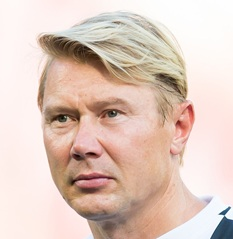
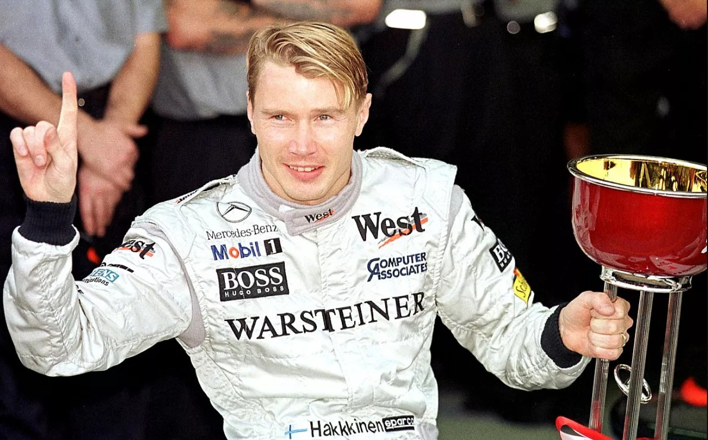
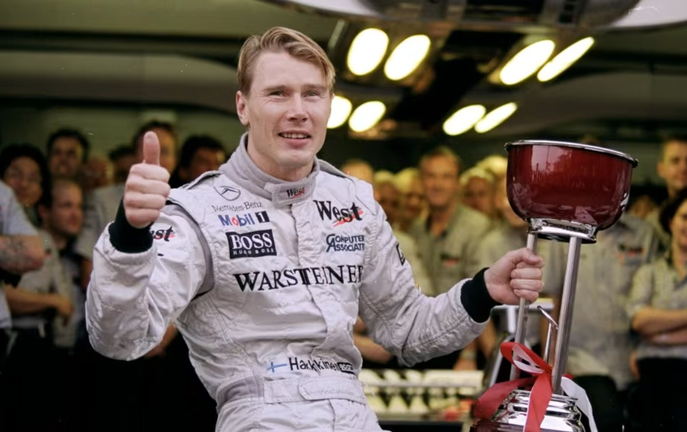

Pályafutása

1993-ban Häkkinen a McLaren-Fordhoz szerződött, mint tesztpilóta. A csapat két versenypilótája Ayrton Senna és Michael Andretti volt. Andretti nagyon sok autót összetört, így a csapatfőnök, Ron Dennis az utolsó három futamra Häkkinent ültette be a helyére a versenyzői ülésbe. Häkkinen első McLarennel futott időmérő edzésén, Estorilban megverte csapattársát, Sennát, a következő futamon, Suzukában pedig már felállhatott a dobogó harmadik fokára is Senna és Alain Prost mögött.
1998-ban a McLaren leszerződtette az elmúlt évek sikermérnökét, Adrian Newey-t és a McLaren egyszerre a világbajnoki címre legesélyesebb csapattá vált. Häkkinen élt is az eséllyel: a szezon során nyolc futamot nyert meg (Melbourne, Interlagos, Barcelona, Monaco, Zeltweg, Hockenheim, Nürburgring, Suzuka) és végül kereken 100 ponttal szerezte meg első világbajnoki címét. Legnagyobb riválisa, Michael Schumacher (Ferrari) 86 pontot szerzett és hat versenyt nyert.
1999-ben folytatódott a Häkkinen-Schumacher párharc, ám csak a brit nagydíjig, amelyen Schumacher balesetet szenvedett és eltört a lába. Emiatt a németnek hat versenyt ki kellett hagynia, így Häkkinen legnagyobb ellenfele Schumacher csapattársa, Eddie Irvine lett. A szezon során a McLaren és Häkkinen is elkövetett hibákat (Mika vezető pozícióból versenyzői hiba miatt esett ki Imolában és Monzában is), ami meglehetősen szorossá tette a pontversenyt közte és Irvine között. Häkkinen azonban végül minden nehézségen felülemelkedett és a szezon utolsó versenyén Suzukában győzelemmel biztosította be második világbajnoki címét.
2000-ben továbbra is a Ferrari és Schumacher bizonyult Häkkinen kihívójának. Ezúttal azonban az olasz csapat sikerrel járt. Schumacher nyolc futamgyőzelemmel és 108 ponttal megnyerte a világbajnokságot, Häkkinen négy győzelemmel (Barcelona, Zeltweg, Hungaroring, Spa-Francorchamps) és 89 ponttal a bajnokság második helyén végzett. Ebben a szezonban került sor Häkkinen pályafutásának leglátványosabbnak tartott manőverére, amikor Spában 2 körrel a verseny vége előtt egyszerre ment el Michael Schumacher és a lekörözött brazil Ricardo Zonta mellett.
Mika Hakkinen
Magánélete
Mika Häkkinen elvált. 1998 és 2008 között felesége Erja Honkanen (házasodtak: 1998. június 13.), ismert finn televíziós személyiség volt. Két gyermekük van: fiuk, Hugo Ronan (született: 2000. december 11.), lányuk, Aina Julia (született: 2005. május 12.). Häkkinen menedzsmentje 2008. február 6-án jelentette be a válást. Jelenleg Marketa Kromatovával él együtt, van három közös gyermekük Ella, (született: 2010. november 30.), Daniel Pauli és Lynn Maria (2014. február 4.).Eredményei
| Aktív évei | 1991 – 2001 |
|---|---|
| Korábbi csapatai | Lotus (1991–1992), McLaren (1993–2001) |
| Nagydíjak száma | 65 |
| Világbajnoki címek | 2 (1998, 1999) |
| Győzelmek | 20 |
| Dobogós helyezések | 51 |
| Első rajtkockák | 26 |
| Leggyorsabb körök | 25 |
Fotók




